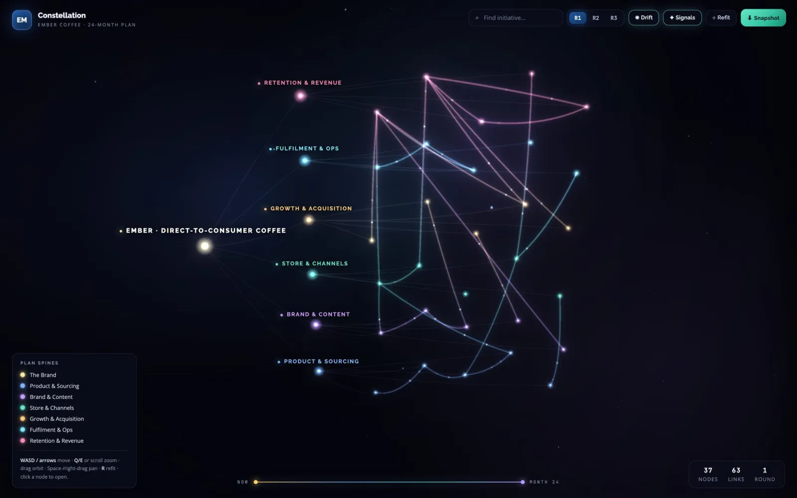
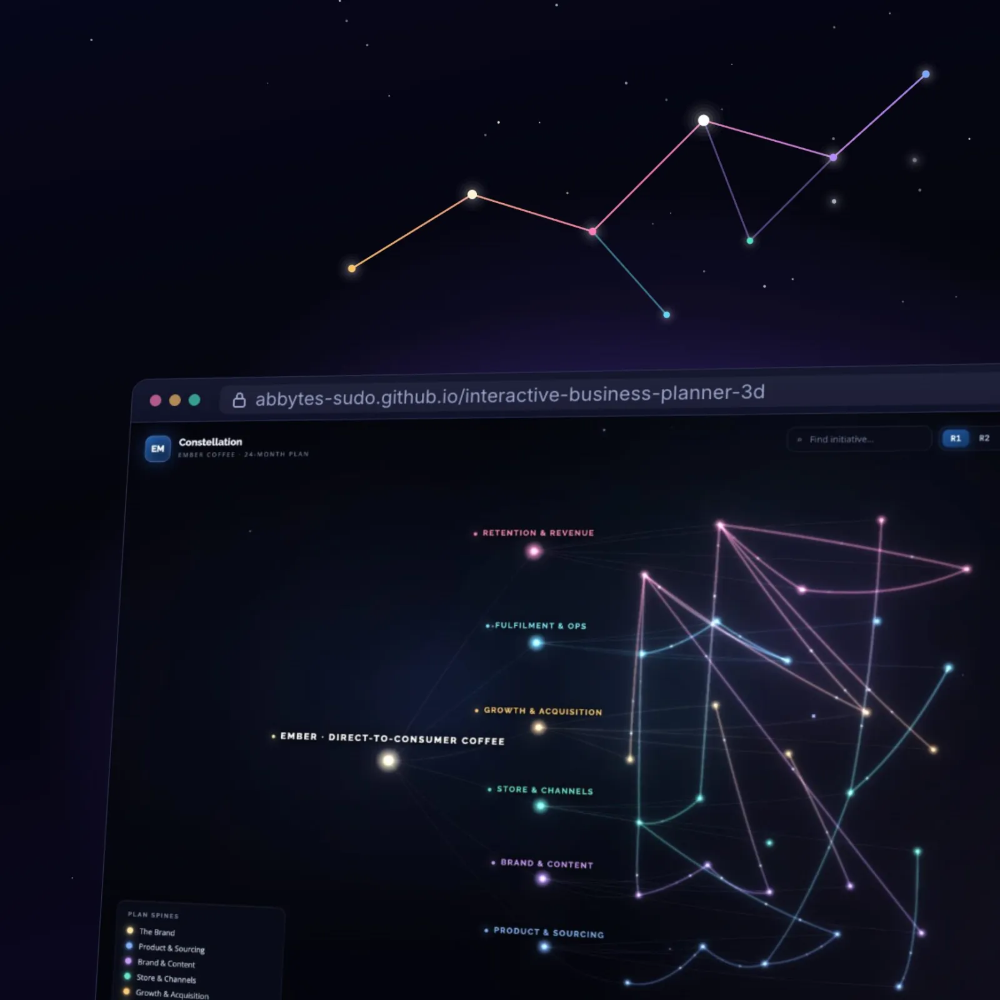
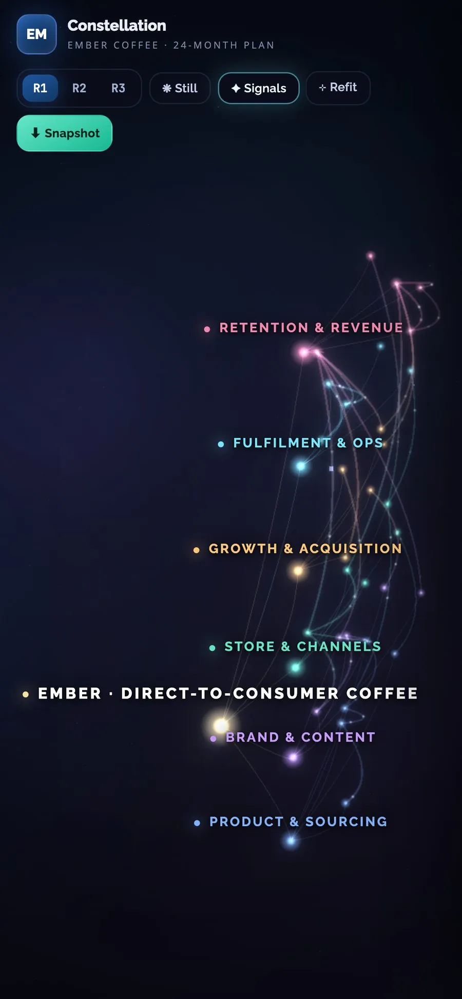
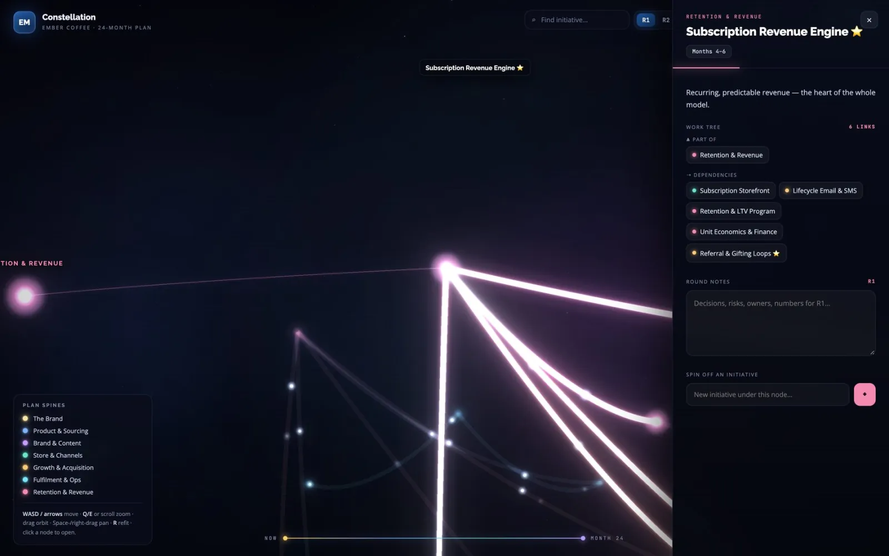
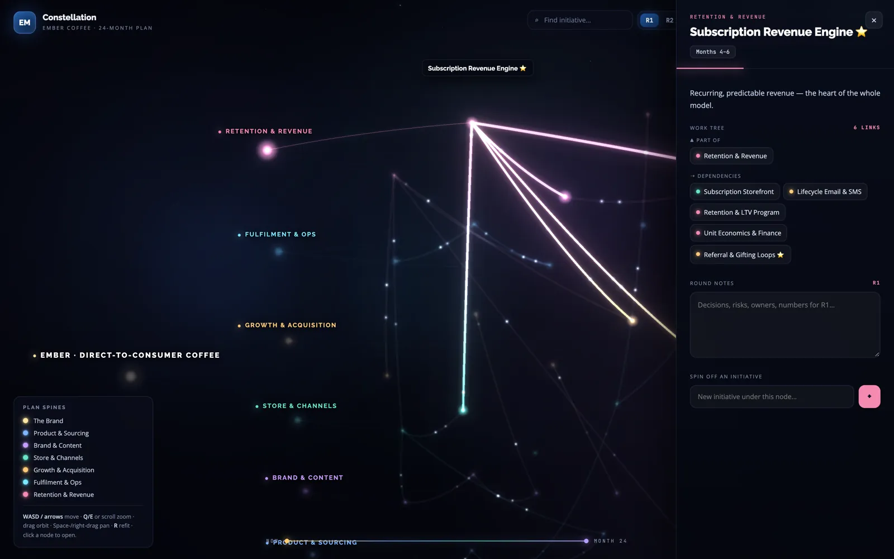
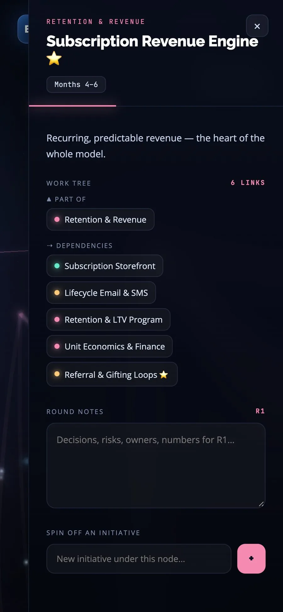

Case study 07 · Product experiment
Constellation3D business planner · product experiment
An interactive 3D canvas for a business plan. Every initiative a star, every dependency a line of light.
- Status
- Live demo · self-initiated; no client or usage results claimed
- My role
- Set the concept, made the product decisions, directed AI coding tools and tested every change
- Built with
- React · Three.js · GitHub Pages; one HTML file, no build step


01 · In short: A plan is a network, not a list.
Long-range business plans tend to live in spreadsheets and slide decks. The initiatives get listed, but the links between them (what has to land before what) hide between the tabs. Constellation is a self-initiated product experiment: lay a whole business plan out in 3D, so you can fly through it like a star map and see every dependency at once.
- See the whole plan at once.
- Make every dependency visible.
- Think in rounds, note in place.
02 · What it does: Six ways to move through a plan.
Fly to any node
Click an initiative and the camera flies to it, opening its work tree: the pillar it belongs to and the work it depends on.
Orbit camera
Drag to orbit, WASD or arrow keys to move, scroll or Q/E to zoom; R refits the whole plan into view. On touch: drag, pinch and two-finger pan.
Per-round notes
Plan in rounds (R1, R2, R3); every initiative keeps its own notes for each round, saved locally on the device.
Spin off initiatives
Add a new initiative under any node, live, straight from its panel.
Search
Type to find any initiative without hunting through the sky.
Snapshot export
Download a self-contained HTML copy of the plan, with your notes and added initiatives baked in.
03 · What makes it different
- Position encodes time. Initiatives sit on a Now → Month 24 timeline, so where a star sits says when it happens.
- Dependencies show direction. Each dependency line carries glowing particles from source to target, so you can see which way the work flows.
- Navigate by relationships. The work tree shows Part of / Feeds into / Dependencies as clickable chips.
- Private by default. Notes stay on the viewer’s device.
- One portable file. It runs in the browser as one HTML file with no build step, and library versions are pinned so a new release can’t break the demo.
04 · What the business can configure: What a planner can change.
- Planning rounds
- R1, R2 and R3, each with its own notes.
- The plan itself
- New initiatives and their dependencies, added live under any node.
- The view
- Drift and Signals toggles to calm or energise the scene; Refit to reframe the whole plan.
- Sharing
- A snapshot export of the current plan as one HTML file.
The demo loads a fictional D2C specialty-coffee brand, Ember, and its 24-month plan across six pillars; it’s sample data, there to show what the tool does with a real plan.
05 · Key screens
Screens from the live demo, showing its fictional sample plan.
01The whole plan




02Click a star






06 · By the numbers, dated
The sample plan, mapped.
6
pillars, each with its own colour
Sample plan · 22 Oct 2026
30
initiatives placed across the six pillars
Sample plan · 22 Oct 2026
27
cross-initiative dependencies, drawn as lines of light
Sample plan · 22 Oct 2026
Not usage results
The figures describe the sample plan in the live demo. Constellation is a self-initiated product experiment: no client or usage results are claimed.
07 · How it was built
- Concept
- Product decisions
- AI-assisted build
- Tested every change
- Live demo
I scoped the problem and decided the data model (root → spines → initiatives with typed links), the interaction design (fly-to focus, work-tree navigation, per-round notes) and what shipped; AI coding tools wrote the code under my direction, and I tested it on desktop and mobile.
StackReact 18 · Three.js r147 · UnrealBloom · Babel-standalone · one HTML file · GitHub Pages